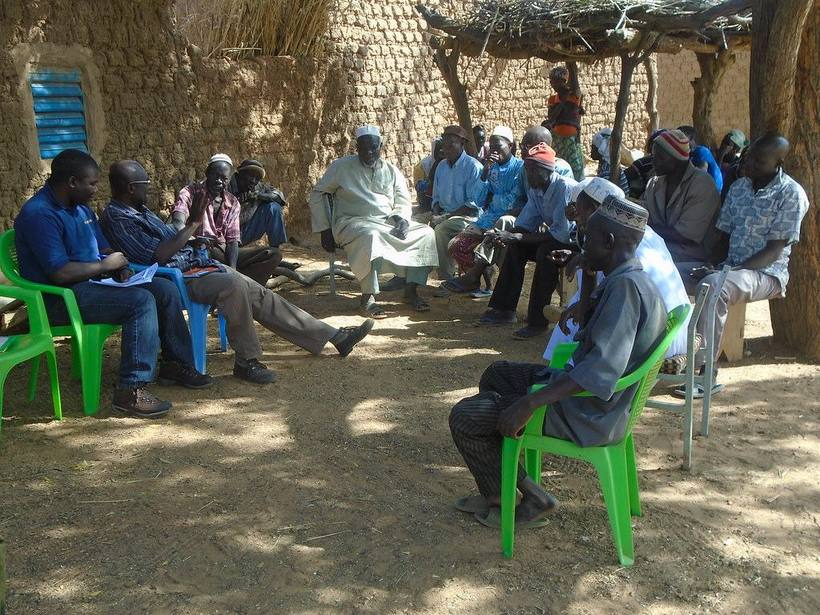

Climate evidence driving just, resilient food, land and water systems
Explore climate research resources from across CGIAR from your preferred vantage point, or browse the ten themes the work is organised under.
Choose your vantage point
The GENDER Platform lets a visitor enter by the kind of thing they want rather than the topic. These four routes are its four, translated to what this catalogue actually holds.
Counts are matched from the 44 catalogued items when the page loads, so a route showing nothing is telling you the truth about the catalogue.
Spotlight
The GENDER Platform carries a spotlight it refreshes weekly. Reproduced here as a structure, with a real item from the catalogue in it.

Browse by theme
The GENDER Platform organises everything under ten named research themes with sub-topics listed beneath each. This is that structure, with climate themes built from the tags already in the catalogue.